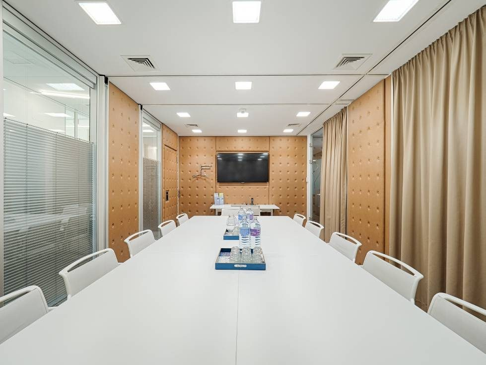

Start › Termin
TerminvereinbarungTermin online anfragen
Wir ersuchen um vorherige Terminvereinbarung, wenn Sie unsere Kanzlei persönlich besuchen wollen. Für den Standort IZD Tower ist ein Termin auch für Beglaubigungen erforderlich.
Die erste Beratung ist kostenlos
Ganz nach dem Motto „Fragen kostet nichts“ ist die erste Beratung bei einem Notar für Sie immer kostenlos. Selbstverständlich geben wir Ihnen gerne bereits vor Beginn unserer Tätigkeit die zu erwartenden Kosten bekannt.
- Donauzentrum: Beglaubigungen ohne Terminvereinbarung während der Öffnungszeiten möglich. Bitte 30 bis 40 Minuten vor Dienstende kommen, wenn Sie auf die Unterlagen warten möchten.
- IZD Tower: Termin erforderlich, damit ein Jurist für Ihre Beglaubigung anwesend ist.
- Geldwäscheprüfung: Ist sie erforderlich, können ergänzende Informationen oder Unterlagen nötig werden – dann ist eine sofortige Unterschriftsbeglaubigung nicht möglich. Ein Termin beugt vor.
- Telefonisch: Weitergehende Informationen erhalten Sie unter 01 / 203 35 05.

Vor dem Termin
Muss ich für eine Beglaubigung einen Termin haben?
Für Unterschriftsbeglaubigungen und beglaubigte Abschriften ist im Donauzentrum eine vorherige Terminvereinbarung nicht erforderlich – für den Standort IZD Tower sehr wohl. Empfohlen ist ein Termin in beiden Fällen.
Was muss ich mitbringen?
Einen amtlichen Lichtbildausweis mit vollständigem Namen, Geburtsdatum, gegebenenfalls Titel und Ihrer Unterschrift sowie die Urkunde, die beglaubigt unterschrieben werden soll. Ist Ihr Ausweis nicht aktuell, bringen Sie zusätzlich Dokumente mit dem letztgültigen Stand Ihrer Personaldaten mit. Zur vollständigen Checkliste
Was kostet die erste Beratung?
Nichts. Die erste Beratung bei einem Notar ist für Sie immer kostenlos. Die weiteren Kosten richten sich – je nach Art der Tätigkeit – nach dem Wert des Gegenstandes und werden Ihnen vor Beginn der Tätigkeit bekannt gegeben.
Geht das auch ohne persönliches Erscheinen?
Ja. Beglaubigungen und Notariatsakte können auch elektronisch errichtet werden: virtueller Datenraum, Video-Identverfahren mit Reisepass oder Personalausweis, Handy-Signatur und abschließende Videokonferenz mit dem Notar. Ablauf ansehen
Wird auch in Englisch beraten?
Ja. Unsere Kanzlei bietet Beratung auch in Englisch an und hat langjährige Erfahrungen für internationale Sachverhalte. Für die englische Sprache sind Notar Dr. Antenreiter und Notarsubstitut Mag. Wibiral, für Englisch und Französisch emeritierter Notar Dr. Kaindl als Dolmetscher allgemein beeidet und gerichtlich zertifiziert.
Brauche ich für das Ausland zusätzlich etwas?
Wird die Unterschriftsbeglaubigung für einen anderen Staat gebraucht, ist in vielen Fällen zusätzlich eine Apostille (Bestätigungsklausel des Landesgerichts für Zivilrechtssachen Wien) oder eine Überbeglaubigung durch die jeweilige ausländische Botschaft vorgeschrieben.